Les preuves.
Les 116 documents d'archive cités dans les dossiers : journaux d'époque, documents officiels, livres, photos. Chacun renvoie au dossier qui l'utilise.
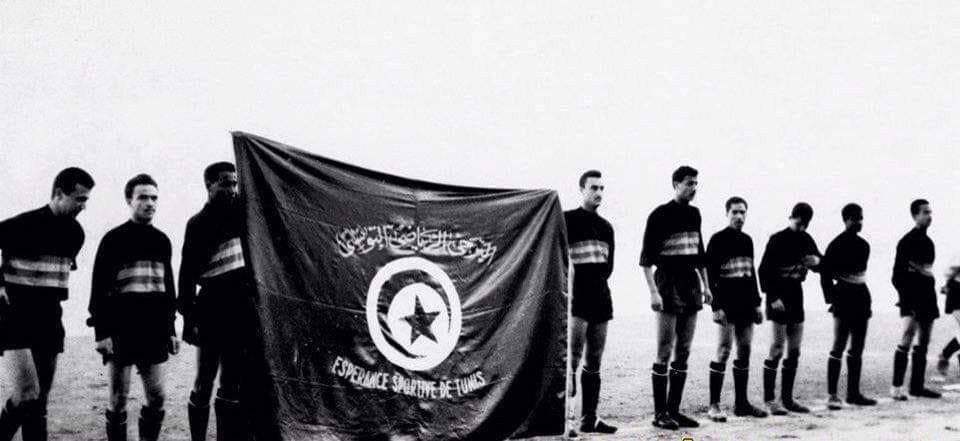
L'espérance en 1955Dossier : Le livre · livre p. 2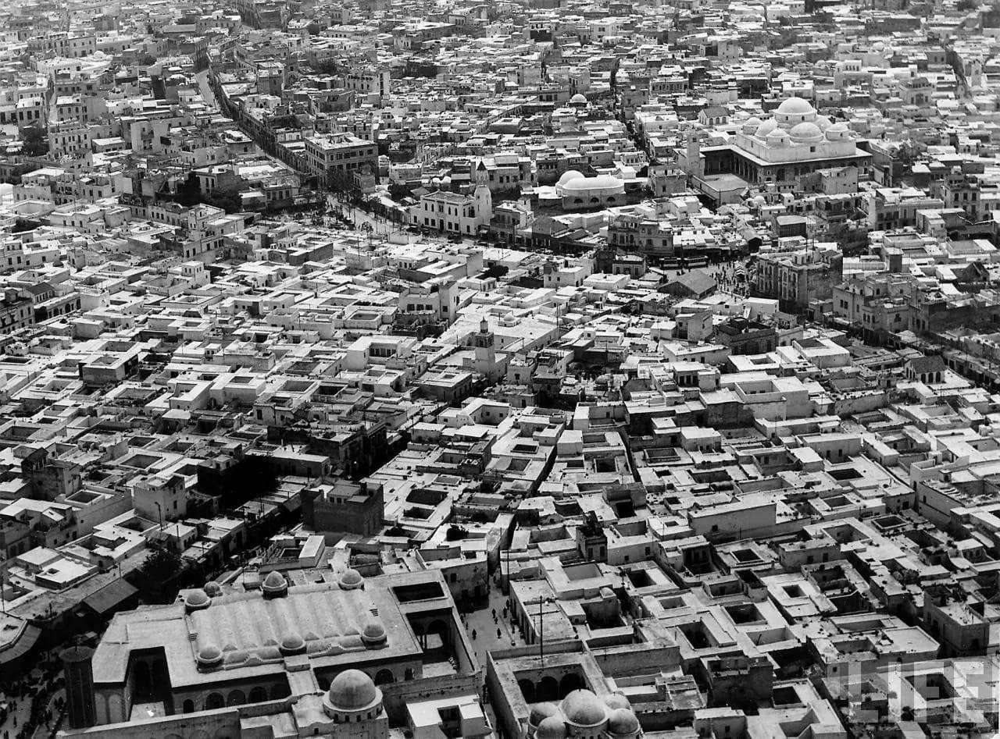
Bab SouikaDossier : Le livre · livre p. 2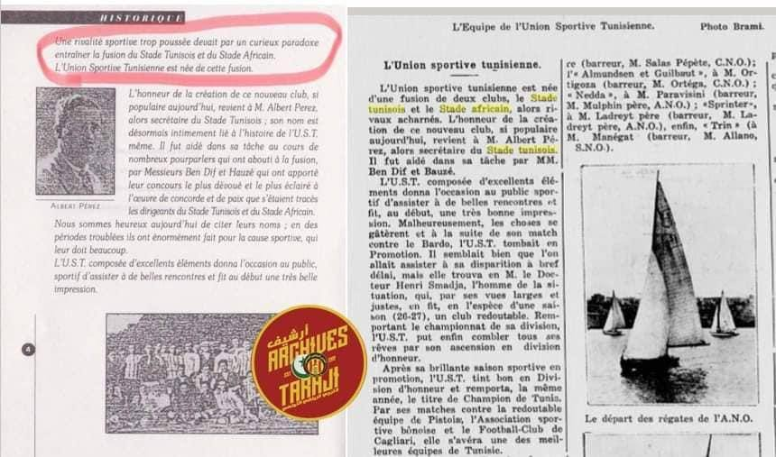
Gauche : livre "les plus années des pieds noirs" d'André Tuil | droite : journal « L'Afrique du Nord illustrée : journal hebdomadaire d'actualités nord-africaines » du 30 Janvier 1930Dossier : Les origines · livre p. 6 Mohamed Zouaoui - co-fondateur de l'Espérance de TunisDossier : Les origines · livre p. 7
Mohamed Zouaoui - co-fondateur de l'Espérance de TunisDossier : Les origines · livre p. 7- Document sans légendeDossier : Les origines · livre p. 8
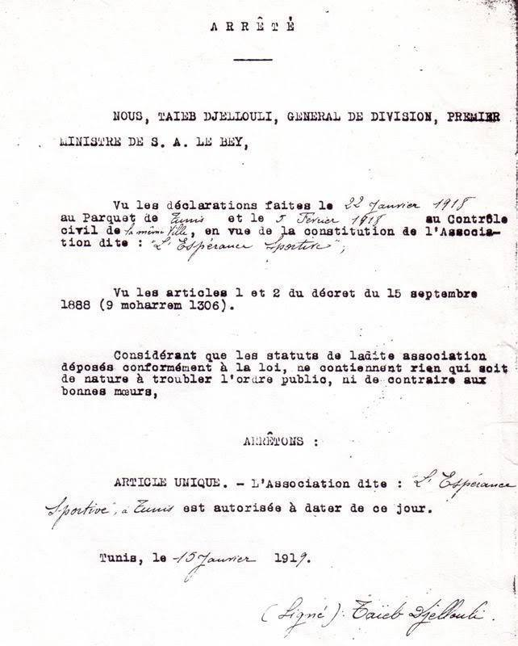
Document sans légendeDossier : Les origines · livre p. 11 Document sans légendeDossier : L'autorisation signée par Djellouli est-elle un faux ? · livre p. 12
Document sans légendeDossier : L'autorisation signée par Djellouli est-elle un faux ? · livre p. 12 L'Espérance en 1920 en vert et blanc avec le drapeau de la Tunisie sur la tuniqueDossier : Les premières couleurs de l'Espérance n'étaient pas le vert et blanc ? · livre p. 14
L'Espérance en 1920 en vert et blanc avec le drapeau de la Tunisie sur la tuniqueDossier : Les premières couleurs de l'Espérance n'étaient pas le vert et blanc ? · livre p. 14 Document sans légendeDossier : L'Espérance, un club « français » ? · livre p. 14
Document sans légendeDossier : L'Espérance, un club « français » ? · livre p. 14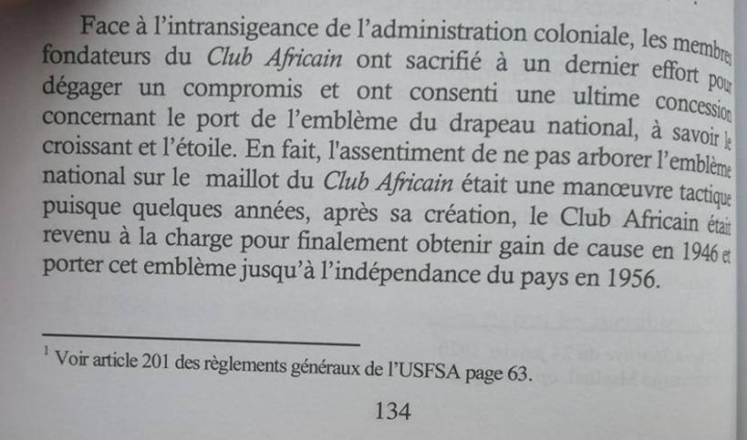
Aux origines du club africain – 134Dossier : L'Espérance, un club « français » ? · livre p. 15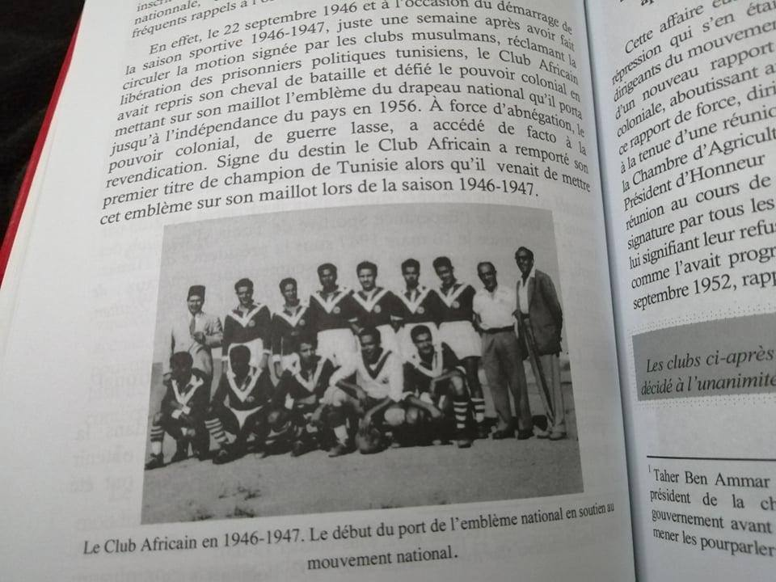
Club Africain en 1946-1947Dossier : L'Espérance, un club « français » ? · livre p. 16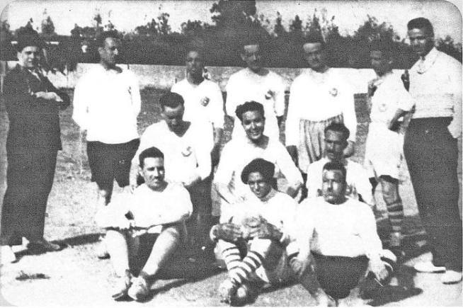
L'Espérance en 1920Dossier : L'Espérance, un club « français » ? · livre p. 16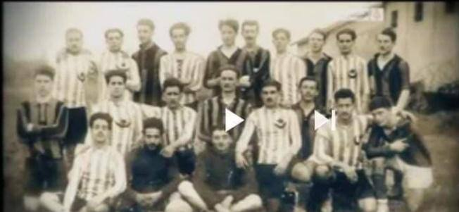
L'Espérance en 1931Dossier : L'Espérance, un club « français » ? · livre p. 16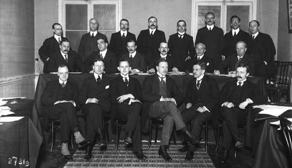
Les membres de l'USFSA en 1913 - Crédit : http://gallica.bnf.fr/Dossier : L'Espérance, un club « français » ? · livre p. 18- Logo de l'Union des sociétés françaises de sports athlétiques.Dossier : L'Espérance, un club « français » ? · livre p. 18
 Embres d'honneur de "la Musulmane"Dossier : La Musulmane (1906) et le nom « islamique » · livre p. 19
Embres d'honneur de "la Musulmane"Dossier : La Musulmane (1906) et le nom « islamique » · livre p. 19 Document sans légendeDossier : La Comète (1913) et la Fédération française · livre p. 21
Document sans légendeDossier : La Comète (1913) et la Fédération française · livre p. 21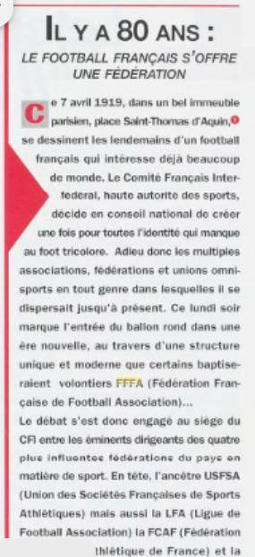
Les Jeunes : courrier de quinzaine du journal "Le Patronage" du 1 Aout 1999Dossier : La Comète (1913) et la Fédération française · livre p. 22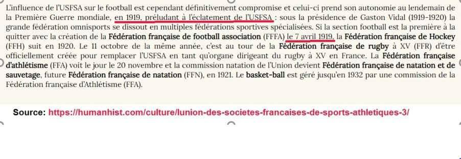
Document sans légendeDossier : La Comète (1913) et la Fédération française · livre p. 23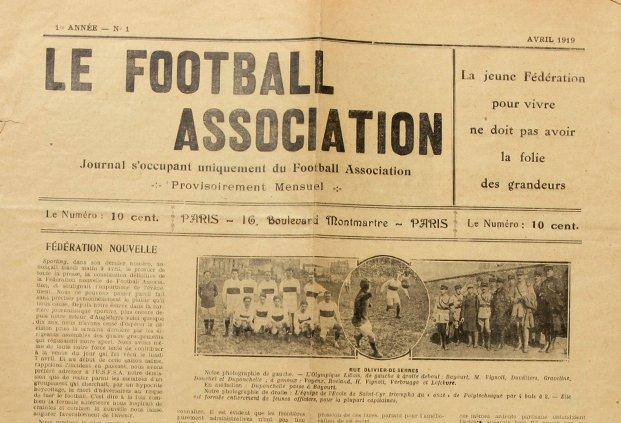
Football association - Avril 1919Dossier : La Comète (1913) et la Fédération française · livre p. 23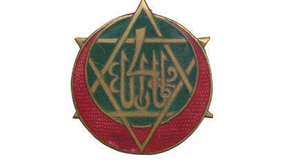
Insigne régimentaire du 4e régiment de tirailleurs tunisiensDossier : La Comète (1913) et la Fédération française · livre p. 24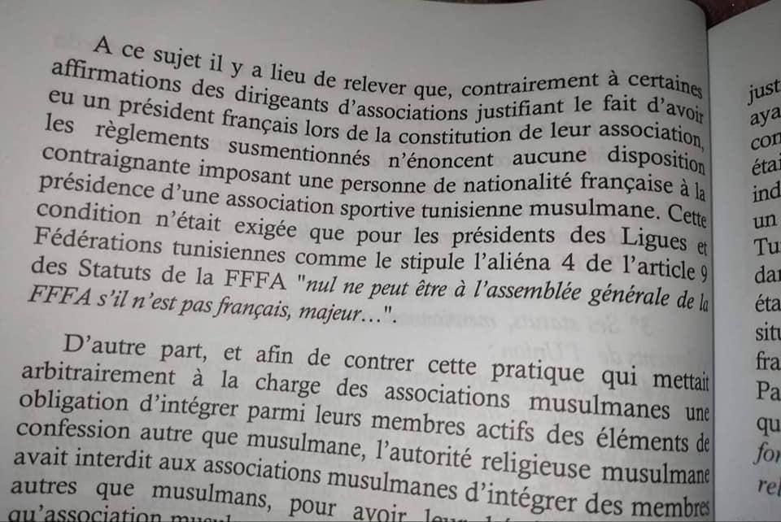
Livre "aux origines du Club Africain" de Lotfi ZahiDossier : La Comète (1913) et la Fédération française · livre p. 24 Document sans légendeDossier : Hamadi Ben Dhif et le nom du Club Africain · livre p. 26
Document sans légendeDossier : Hamadi Ben Dhif et le nom du Club Africain · livre p. 26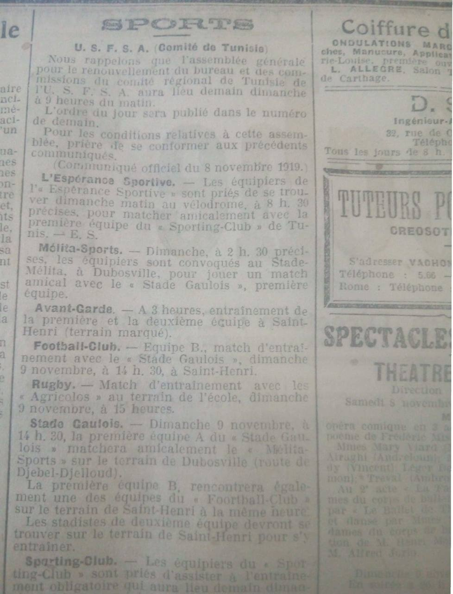
8 Novembre 1919 : Le bureau de l'Espérance Sportive reçoit un télégramme de l'USFSA pour matcher avec le Sporting ClubDossier : Hamadi Ben Dhif et le nom du Club Africain · livre p. 27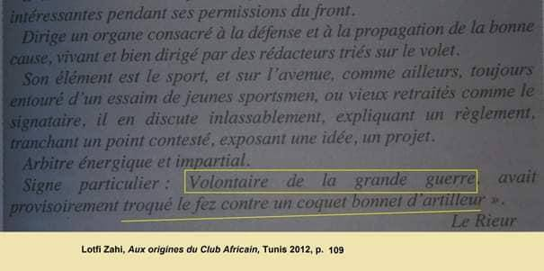
Document sans légendeDossier : Hamadi Ben Dhif et le nom du Club Africain · livre p. 28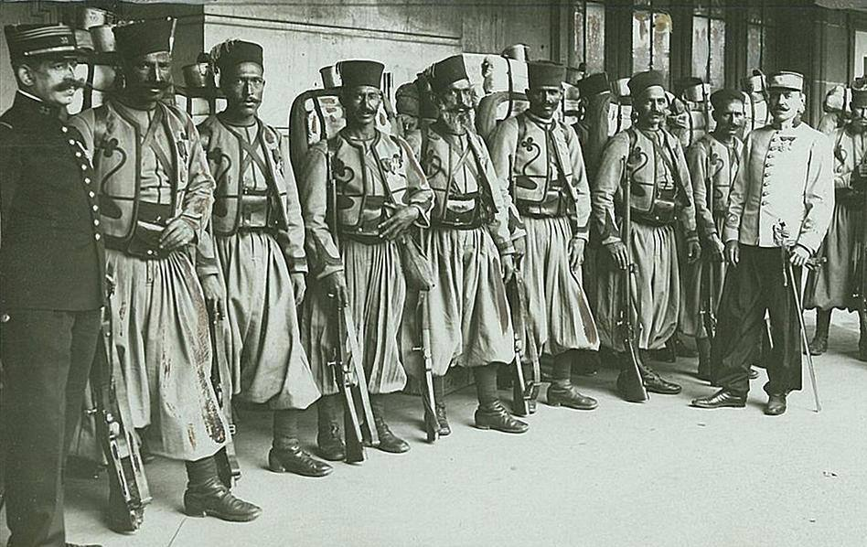
Quatrième régiment de tirailleurs tunisiens à la gare d'Austerlitz lors du défilé du 14 juillet [Paris]Dossier : Hamadi Ben Dhif et le nom du Club Africain · livre p. 29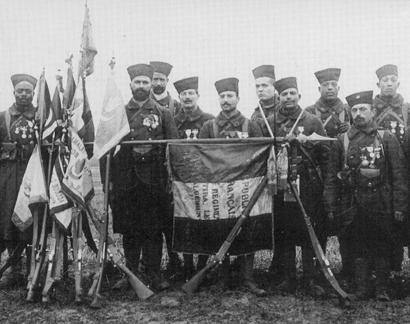
Le Drapeau du 4èmeTirailleurs en 1917Dossier : Hamadi Ben Dhif et le nom du Club Africain · livre p. 29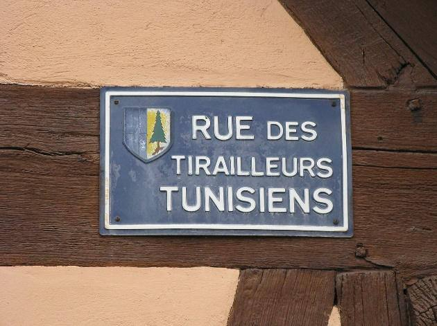
Plaque d'une rue de Scheibenhard en AlsaceDossier : Hamadi Ben Dhif et le nom du Club Africain · livre p. 30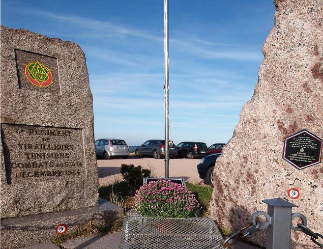
Monument à la mémoire du régiment au Hohneck (Vosges)Dossier : Hamadi Ben Dhif et le nom du Club Africain · livre p. 30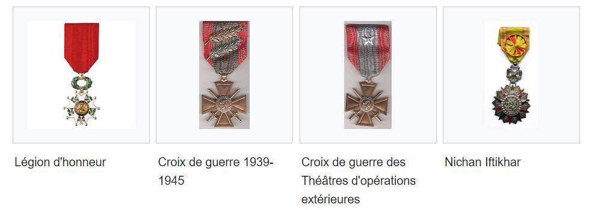
Document sans légendeDossier : Hamadi Ben Dhif et le nom du Club Africain · livre p. 30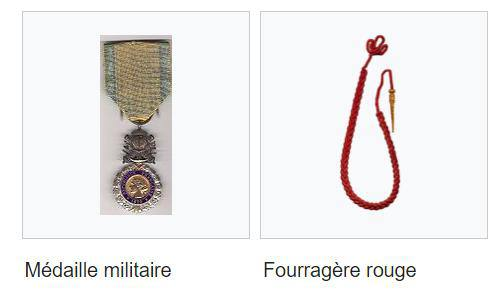
Document sans légendeDossier : Hamadi Ben Dhif et le nom du Club Africain · livre p. 30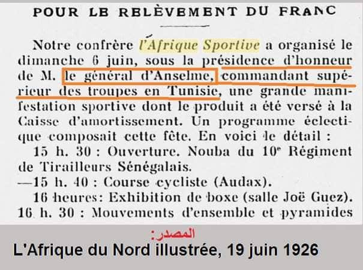
Document sans légendeDossier : Hamadi Ben Dhif et le nom du Club Africain · livre p. 32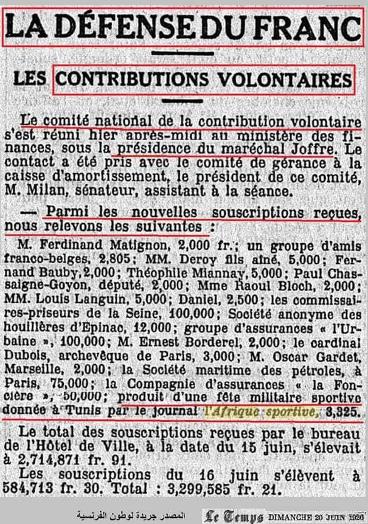
N article publié le 20 juin 1926 dans le journal « Le Temps ».Dossier : Hamadi Ben Dhif et le nom du Club Africain · livre p. 33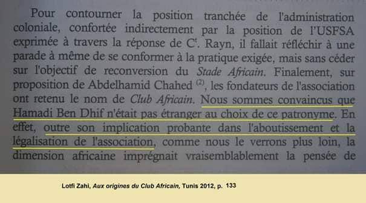
Document sans légendeDossier : Hamadi Ben Dhif et le nom du Club Africain · livre p. 34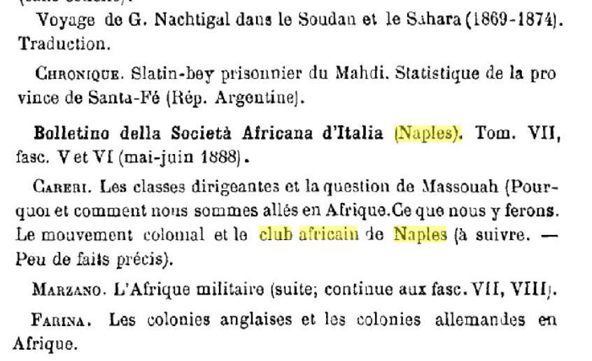
Bulletin / Société languedocienne de géographie - Jan 1888 sur le mouvement colonial et le club africain de NaplesDossier : Hamadi Ben Dhif et le nom du Club Africain · livre p. 35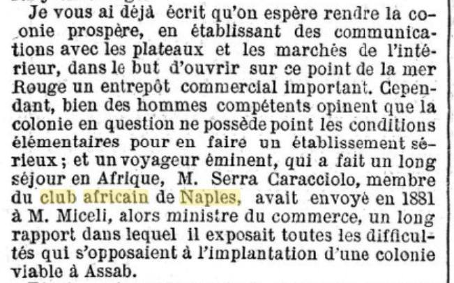
Le Temps du 20 Mai 1882 et l'implantation d'une colonie viable à AssabDossier : Hamadi Ben Dhif et le nom du Club Africain · livre p. 36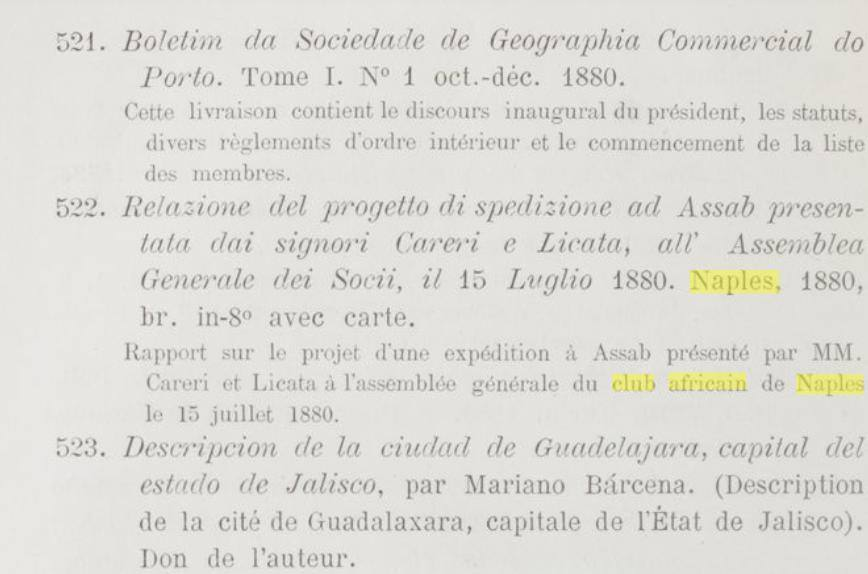
Rapport sur l'expédition à Assab - Bulletin de la société 1 Janvier 1883Dossier : Hamadi Ben Dhif et le nom du Club Africain · livre p. 36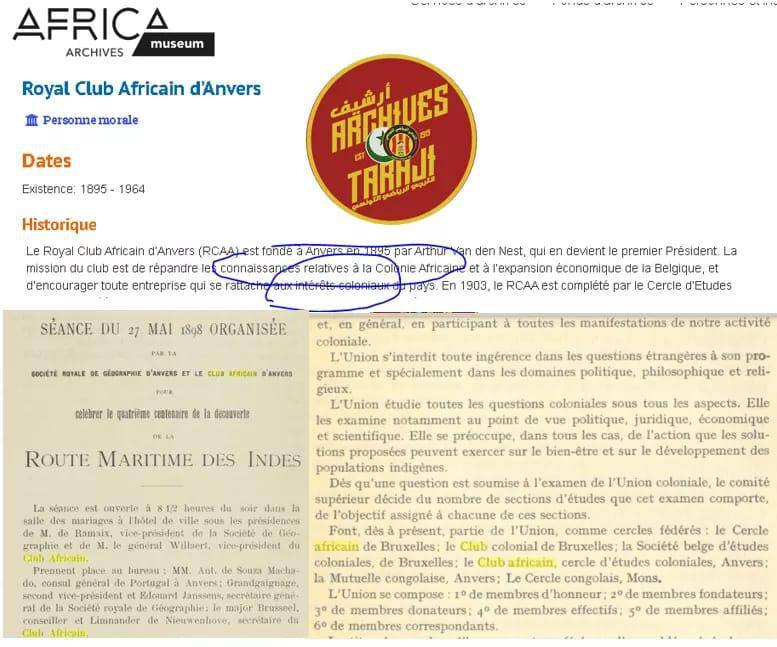
Africa Archive Musem - Club Africain d'Anvers : club colonialDossier : Hamadi Ben Dhif et le nom du Club Africain · livre p. 37 Comité directeur de l'Espérance en 1931Dossier : Le CA, porte-drapeau du nationalisme ? · livre p. 38
Comité directeur de l'Espérance en 1931Dossier : Le CA, porte-drapeau du nationalisme ? · livre p. 38 Mustapha Kaak (1893-1984)Dossier : Le CA, porte-drapeau du nationalisme ? · livre p. 40
Mustapha Kaak (1893-1984)Dossier : Le CA, porte-drapeau du nationalisme ? · livre p. 40 Gouvernement Ben Ammar en 1954 : Tahar Zaouche est le troisième à partir de la droiteDossier : Le CA, porte-drapeau du nationalisme ? · livre p. 41
Gouvernement Ben Ammar en 1954 : Tahar Zaouche est le troisième à partir de la droiteDossier : Le CA, porte-drapeau du nationalisme ? · livre p. 41 Livre "le football et l'Afrique"Dossier : fables.html · livre p. 42
Livre "le football et l'Afrique"Dossier : fables.html · livre p. 42 Livre football et l'Afrique - Page 81Dossier : fables.html · livre p. 42
Livre football et l'Afrique - Page 81Dossier : fables.html · livre p. 42 Le Football a-t-il libéré l'Afrique" de Paul DietschyDossier : Ce que publiait le magazine « L'Histoire » · livre p. 43
Le Football a-t-il libéré l'Afrique" de Paul DietschyDossier : Ce que publiait le magazine « L'Histoire » · livre p. 43 Le Matin : derniers télégrammes de la nuit du 10 Avril 1939 Figure 34 - le Matin : derniers télégrammes de la nuit du 10 Avril 1939Dossier : L'Espérance et les étrangers avant l'indépendance · livre p. 44
Le Matin : derniers télégrammes de la nuit du 10 Avril 1939 Figure 34 - le Matin : derniers télégrammes de la nuit du 10 Avril 1939Dossier : L'Espérance et les étrangers avant l'indépendance · livre p. 44 La nuit - 11 Avril 1939Dossier : L'Espérance et les étrangers avant l'indépendance · livre p. 44
La nuit - 11 Avril 1939Dossier : L'Espérance et les étrangers avant l'indépendance · livre p. 44 Libre d'André Tuil - Les plus années des pieds noirsDossier : L'Espérance et les étrangers avant l'indépendance · livre p. 44
Libre d'André Tuil - Les plus années des pieds noirsDossier : L'Espérance et les étrangers avant l'indépendance · livre p. 44 Document sans légendeDossier : L'Espérance et les étrangers avant l'indépendance · livre p. 45
Document sans légendeDossier : L'Espérance et les étrangers avant l'indépendance · livre p. 45 Feu Chedly Zouiten , deuxième à gaucheDossier : L'Espérance et les étrangers avant l'indépendance · livre p. 46
Feu Chedly Zouiten , deuxième à gaucheDossier : L'Espérance et les étrangers avant l'indépendance · livre p. 46 Chekh Habib DraouaDossier : L'Espérance et les étrangers avant l'indépendance · livre p. 47
Chekh Habib DraouaDossier : L'Espérance et les étrangers avant l'indépendance · livre p. 47 Abdelaziz Ben TifourDossier : L'Espérance et les étrangers avant l'indépendance · livre p. 47
Abdelaziz Ben TifourDossier : L'Espérance et les étrangers avant l'indépendance · livre p. 47 Mustapha ZITOUNI, Kaddour BEKHLOUFI, Abdelaziz BENTIFOUR,Dossier : L'Espérance et les étrangers avant l'indépendance · livre p. 47
Mustapha ZITOUNI, Kaddour BEKHLOUFI, Abdelaziz BENTIFOUR,Dossier : L'Espérance et les étrangers avant l'indépendance · livre p. 47 L'Espérance en 1944, debout de gauche à droite : Cheikh Draoua, Mokhtar Nasra, Larbi Soudani, Laroussi Tsouri, Samaris, Said Taam. Accroupis : Moncef Klibi, Moncef Zouhir, Mabrouk, Abdelaziz Ben Tifour, Mustapha ChennoufiDossier : L'Espérance et les étrangers avant l'indépendance · livre p. 48
L'Espérance en 1944, debout de gauche à droite : Cheikh Draoua, Mokhtar Nasra, Larbi Soudani, Laroussi Tsouri, Samaris, Said Taam. Accroupis : Moncef Klibi, Moncef Zouhir, Mabrouk, Abdelaziz Ben Tifour, Mustapha ChennoufiDossier : L'Espérance et les étrangers avant l'indépendance · livre p. 48 L'Espérance en 1947. De gauche à droite : Mouldi Ben Othman, Mustapha Chenoufi, Larbi Soudani, Moncef Klibi, Laroussi Tsouri, Moncef Zouhir, Hamadi Chagnam (Samaris), Habib Labbassi, Abdelaziz Ben Tifour, Said Taam, Habib Ben Meskin (Mabrouk)Dossier : L'Espérance et les étrangers avant l'indépendance · livre p. 48
L'Espérance en 1947. De gauche à droite : Mouldi Ben Othman, Mustapha Chenoufi, Larbi Soudani, Moncef Klibi, Laroussi Tsouri, Moncef Zouhir, Hamadi Chagnam (Samaris), Habib Labbassi, Abdelaziz Ben Tifour, Said Taam, Habib Ben Meskin (Mabrouk)Dossier : L'Espérance et les étrangers avant l'indépendance · livre p. 48 À Taraji Archives, nous prônons la rigueur, le respect et la preuve. Mais que cela soit clair : ce respect s’arrête là où commence la désinformation. À tous ceux qui ont tenté — ou tenteront encore — de porter atteinte à l’Espérance : l’histoire répondra. Les archives parleront. Figure 42 Club Africain était très ouvert aux étrangers avant l'indépendanceDossier : L'Espérance et les étrangers avant l'indépendance · livre p. 49
À Taraji Archives, nous prônons la rigueur, le respect et la preuve. Mais que cela soit clair : ce respect s’arrête là où commence la désinformation. À tous ceux qui ont tenté — ou tenteront encore — de porter atteinte à l’Espérance : l’histoire répondra. Les archives parleront. Figure 42 Club Africain était très ouvert aux étrangers avant l'indépendanceDossier : L'Espérance et les étrangers avant l'indépendance · livre p. 49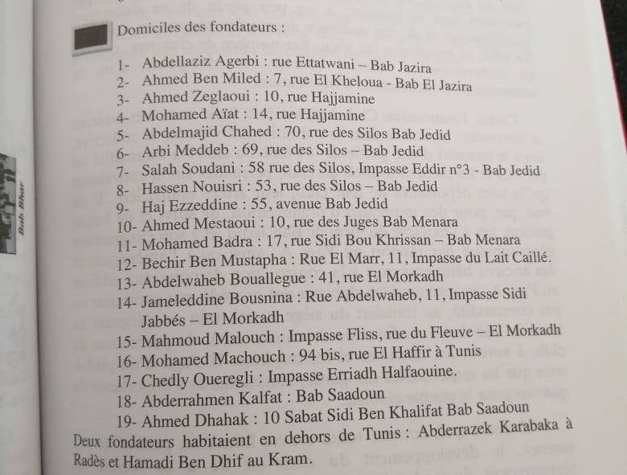
Hamadi Ben Dhif - un des majeurs fondateurs du Club AfricainDossier : Hamadi Ben Dhif · livre p. 50 Document sans légendeDossier : Mounir Kebaili · livre p. 51
Document sans légendeDossier : Mounir Kebaili · livre p. 51 L'Afrique du Nord illustrée : journal hebdomadaire d’actualités nord-Africaines du 27 février 1932Dossier : Mounir Kebaili · livre p. 52
L'Afrique du Nord illustrée : journal hebdomadaire d’actualités nord-Africaines du 27 février 1932Dossier : Mounir Kebaili · livre p. 52 « L'Afrique française : bulletin mensuel du Comité de l'Afrique française et du Comité du Maroc du 1 Janvier 1930Dossier : Mounir Kebaili · livre p. 53
« L'Afrique française : bulletin mensuel du Comité de l'Afrique française et du Comité du Maroc du 1 Janvier 1930Dossier : Mounir Kebaili · livre p. 53 « Les Annales coloniales : organe de la "France coloniale moderne" du 15 Mars 1927Dossier : Mounir Kebaili · livre p. 54
« Les Annales coloniales : organe de la "France coloniale moderne" du 15 Mars 1927Dossier : Mounir Kebaili · livre p. 54 La petite Tunisie du 5 Mai 1933Dossier : Mounir Kebaili · livre p. 54
La petite Tunisie du 5 Mai 1933Dossier : Mounir Kebaili · livre p. 54 Site officiel de la diplomatie française - page 51Dossier : Mounir Kebaili · livre p. 55
Site officiel de la diplomatie française - page 51Dossier : Mounir Kebaili · livre p. 55 Abdelmajid Kebaili - ambassadeur de la France à OMAN en 1977Dossier : Mounir Kebaili · livre p. 56
Abdelmajid Kebaili - ambassadeur de la France à OMAN en 1977Dossier : Mounir Kebaili · livre p. 56 Abdelmajid Kebaili - ancien soldat françaisDossier : Mounir Kebaili · livre p. 56
Abdelmajid Kebaili - ancien soldat françaisDossier : Mounir Kebaili · livre p. 56 JORT du 30 AvrIl 1957Dossier : Mounir Kebaili · livre p. 57
JORT du 30 AvrIl 1957Dossier : Mounir Kebaili · livre p. 57 Mounir kebaili -Soldat FrançaisDossier : Mounir Kebaili · livre p. 58
Mounir kebaili -Soldat FrançaisDossier : Mounir Kebaili · livre p. 58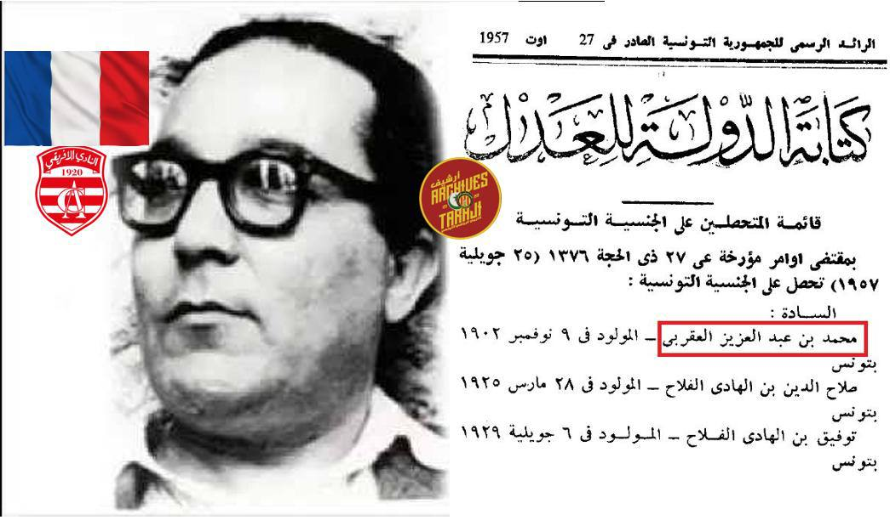
JORT du 27 août 1957 - Page 11Dossier : Abdelaziz Agrebi · livre p. 60 Le club africain en 1947-1948 avec 3 étrangers (Millazo, Durin et Kebaili)Dossier : Pierre Durin · livre p. 61
Le club africain en 1947-1948 avec 3 étrangers (Millazo, Durin et Kebaili)Dossier : Pierre Durin · livre p. 61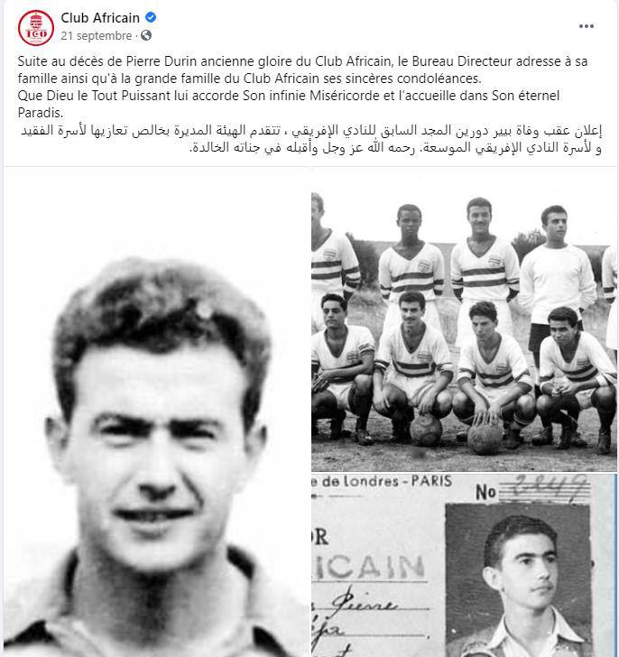
Page officielle du Club Africain présentant les condoléances à la famille de Pierre DurinDossier : Pierre Durin · livre p. 62 MilazzoDossier : Sauveur Millazio · livre p. 63
MilazzoDossier : Sauveur Millazio · livre p. 63 Sauveur MilazzoDossier : Sauveur Millazio · livre p. 64
Sauveur MilazzoDossier : Sauveur Millazio · livre p. 64 "les plus belles années des pieds noirs" d'andré TuilDossier : Sauveur Millazio · livre p. 64
"les plus belles années des pieds noirs" d'andré TuilDossier : Sauveur Millazio · livre p. 64 Aaam el Aid, doyen des supporters clubistes en 2020Dossier : Sauveur Millazio · livre p. 65
Aaam el Aid, doyen des supporters clubistes en 2020Dossier : Sauveur Millazio · livre p. 65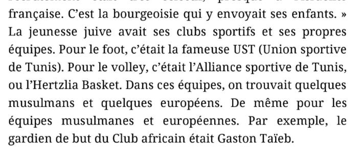
Juifs au Maghreb: Mélanges à la mémoire de Jacques TaïebDossier : Gaston Taieb · livre p. 66 Ivre les plus années des pieds noirsDossier : André Tuil · livre p. 67
Ivre les plus années des pieds noirsDossier : André Tuil · livre p. 67 Passage 1 : le CA recrutait des non musulmans contrairement à l’EspéranceDossier : André Tuil · livre p. 67
Passage 1 : le CA recrutait des non musulmans contrairement à l’EspéranceDossier : André Tuil · livre p. 67 Assage 3 : seul juif mais pas le seul étrangerDossier : André Tuil · livre p. 67
Assage 3 : seul juif mais pas le seul étrangerDossier : André Tuil · livre p. 67 Passage 2 : au CA, on ignorait le "racisme" et le club accueillait les non musulmansDossier : André Tuil · livre p. 67
Passage 2 : au CA, on ignorait le "racisme" et le club accueillait les non musulmansDossier : André Tuil · livre p. 67 Bonus : les supporters de l'Espérance plus nombreuxDossier : André Tuil · livre p. 67
Bonus : les supporters de l'Espérance plus nombreuxDossier : André Tuil · livre p. 67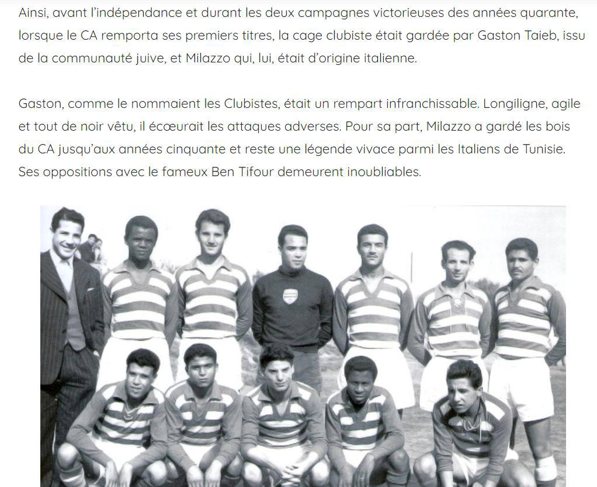
Document sans légendeDossier : Corso · livre p. 68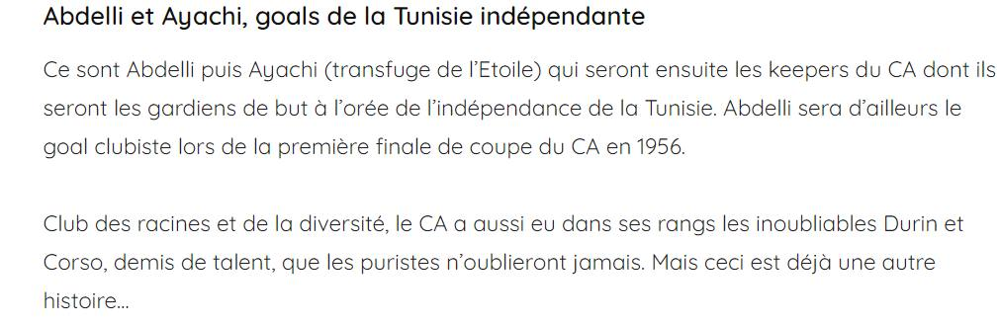
Webdo.tn du 5 Juin 2015Dossier : Corso · livre p. 68 Mustapha SfarDossier : Mustapha Sfar · livre p. 69
Mustapha SfarDossier : Mustapha Sfar · livre p. 69 Déclaration honteuse de Mustapha SfarDossier : Mustapha Sfar · livre p. 70
Déclaration honteuse de Mustapha SfarDossier : Mustapha Sfar · livre p. 70 Archive nationale 40/41Dossier : Mustapha Sfar · livre p. 70
Archive nationale 40/41Dossier : Mustapha Sfar · livre p. 70 L'Afrique du Nord illustrée : journal hebdomadaire d'actualités nord-africaines : Algérie, Tunisie, Maroc du 26 Octobre 1935Dossier : Mustapha Sfar · livre p. 71
L'Afrique du Nord illustrée : journal hebdomadaire d'actualités nord-africaines : Algérie, Tunisie, Maroc du 26 Octobre 1935Dossier : Mustapha Sfar · livre p. 71 Premier couverture du journal Le Tunisien.Dossier : Mustapha Sfar · livre p. 72
Premier couverture du journal Le Tunisien.Dossier : Mustapha Sfar · livre p. 72 Livre "l'enseigne arabe en Tunisie" de Abdeljelil ZaoucheDossier : Mustapha Sfar · livre p. 73
Livre "l'enseigne arabe en Tunisie" de Abdeljelil ZaoucheDossier : Mustapha Sfar · livre p. 73 Classe de Khaldounia en 1908Dossier : Mustapha Sfar · livre p. 73
Classe de Khaldounia en 1908Dossier : Mustapha Sfar · livre p. 73 Abdeljelil Zaouche au procès de l'affaire du Djellaz en 1911.Dossier : Mustapha Sfar · livre p. 74
Abdeljelil Zaouche au procès de l'affaire du Djellaz en 1911.Dossier : Mustapha Sfar · livre p. 74 Abdeljalil Zaouche - ancien président de l'EspéranceDossier : Mustapha Sfar · livre p. 75
Abdeljalil Zaouche - ancien président de l'EspéranceDossier : Mustapha Sfar · livre p. 75 La dépêche Tunisienne du 3 Mars 1941Dossier : Mustapha Sfar · livre p. 76
La dépêche Tunisienne du 3 Mars 1941Dossier : Mustapha Sfar · livre p. 76 Le petit matin du 9 Mars 1941Dossier : Mustapha Sfar · livre p. 77
Le petit matin du 9 Mars 1941Dossier : Mustapha Sfar · livre p. 77 Le petit matin du 9 Mars 1941Dossier : Mustapha Sfar · livre p. 78
Le petit matin du 9 Mars 1941Dossier : Mustapha Sfar · livre p. 78 Ruban du dragon d'AnnamDossier : Mustapha Sfar · livre p. 79
Ruban du dragon d'AnnamDossier : Mustapha Sfar · livre p. 79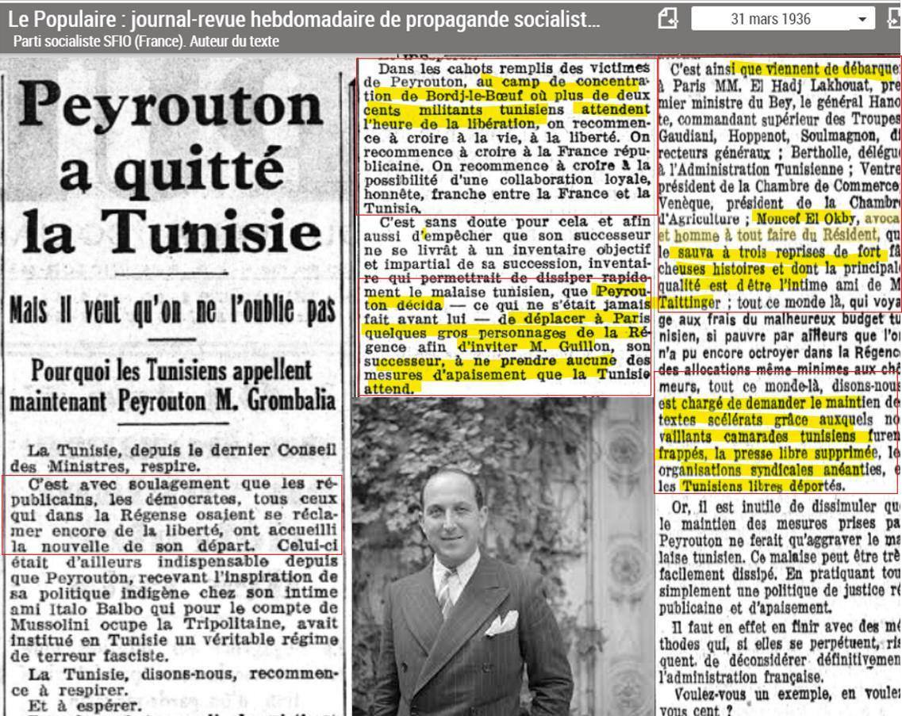
Journal le populaire du 31 Mars 1936Dossier : Moncef Okbi · livre p. 82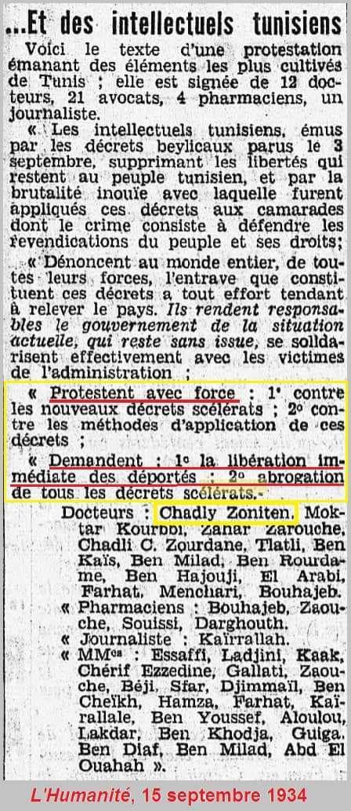
Pétition signé contre PeyroutonDossier : Moncef Okbi · livre p. 83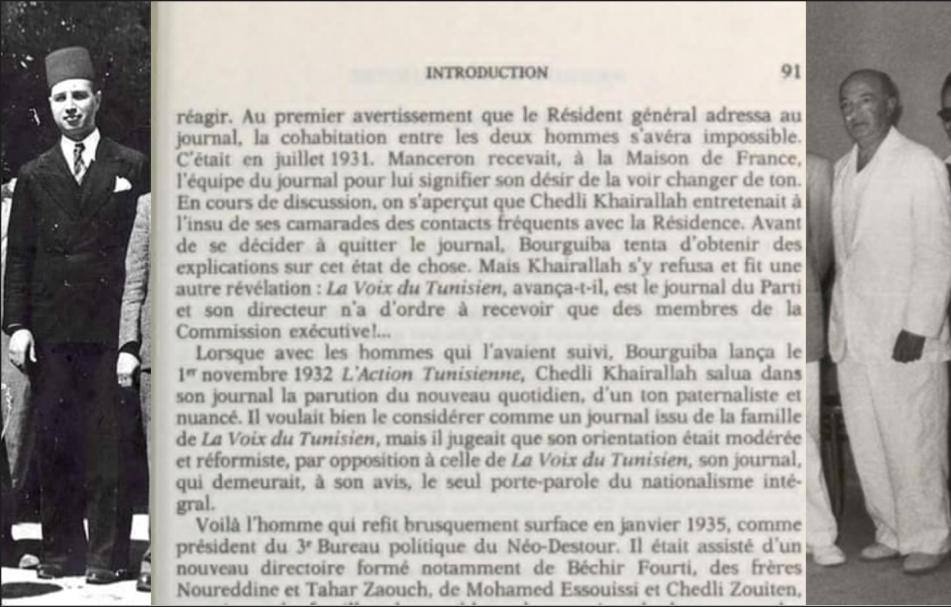
Livre de Habib Bourguiba - Ma vie, mon oeuvre 1934-1938" - Page 91Dossier : Moncef Okbi · livre p. 84 CamilariDossier : Étrangers sous le maillot clubiste · livre p. 86
CamilariDossier : Étrangers sous le maillot clubiste · livre p. 86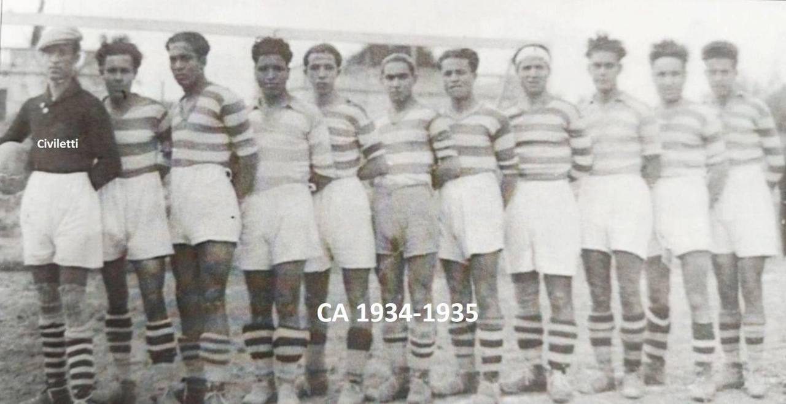
CivilettiDossier : Étrangers sous le maillot clubiste · livre p. 86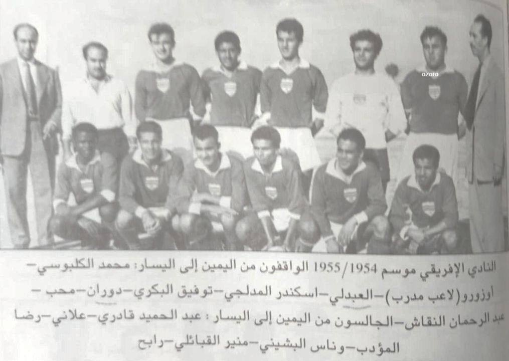
Ozoro , Pierre Durin, Mounir KebailiDossier : Étrangers sous le maillot clubiste · livre p. 87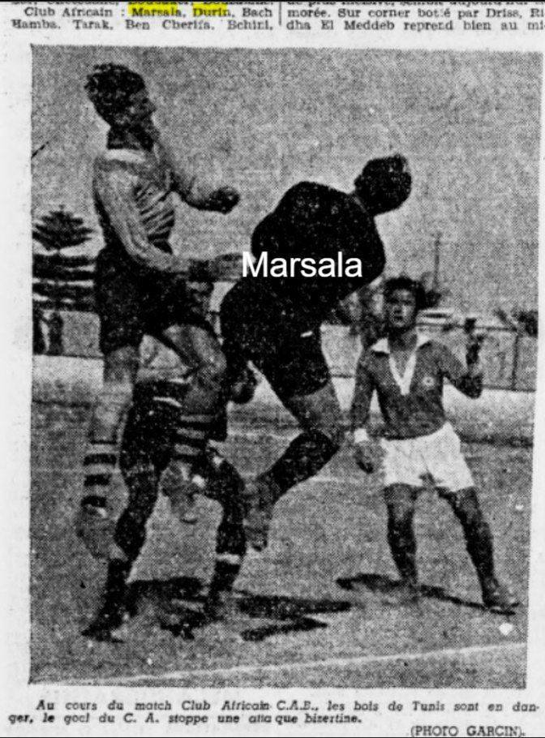
MarsalaDossier : Étrangers sous le maillot clubiste · livre p. 88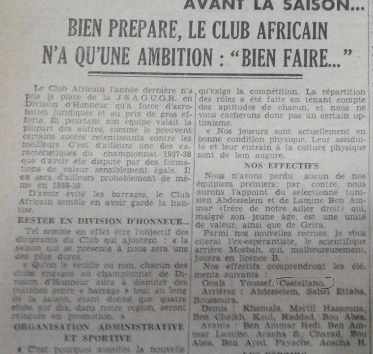
CastellanoDossier : Étrangers sous le maillot clubiste · livre p. 89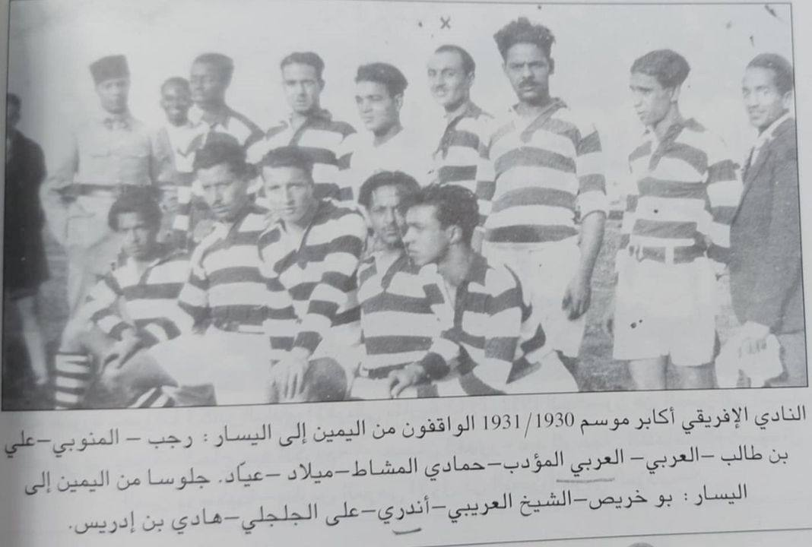
André TuilDossier : Étrangers sous le maillot clubiste · livre p. 90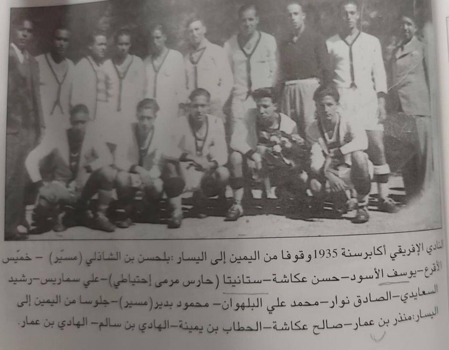
StanitaDossier : Étrangers sous le maillot clubiste · livre p. 91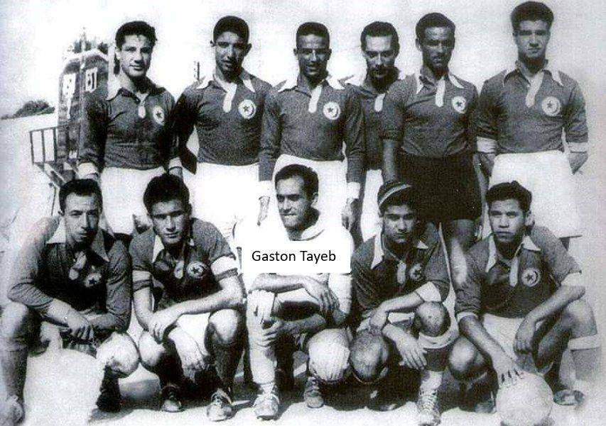
Gaston TayebDossier : Étrangers sous le maillot clubiste · livre p. 92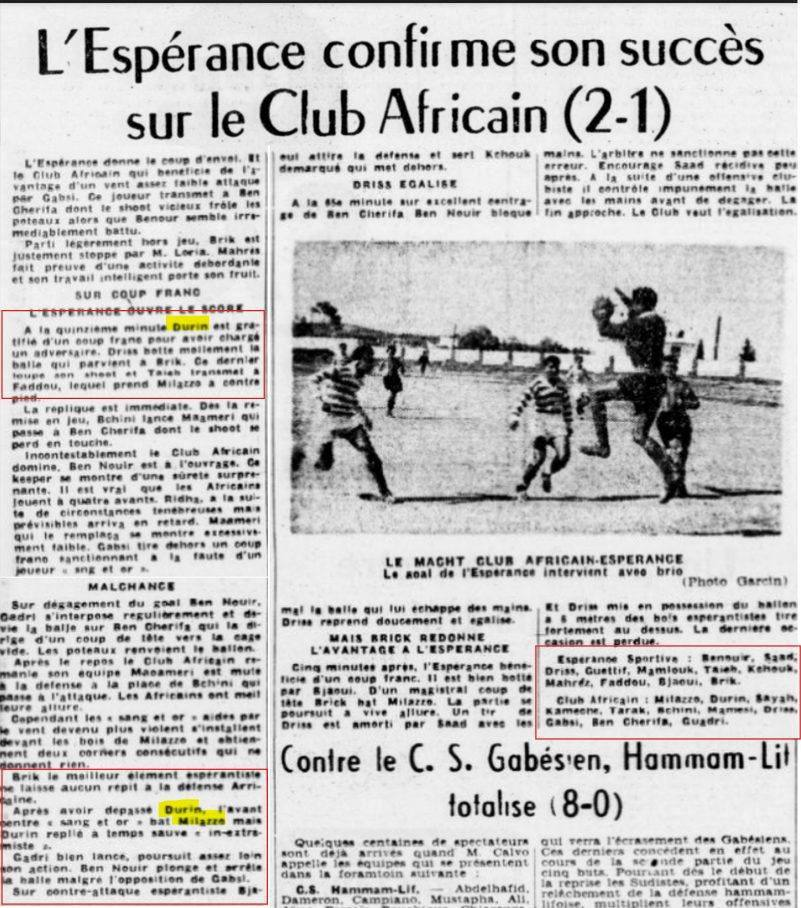
Derby avant l'indépendanceDossier : Étrangers sous le maillot clubiste · livre p. 94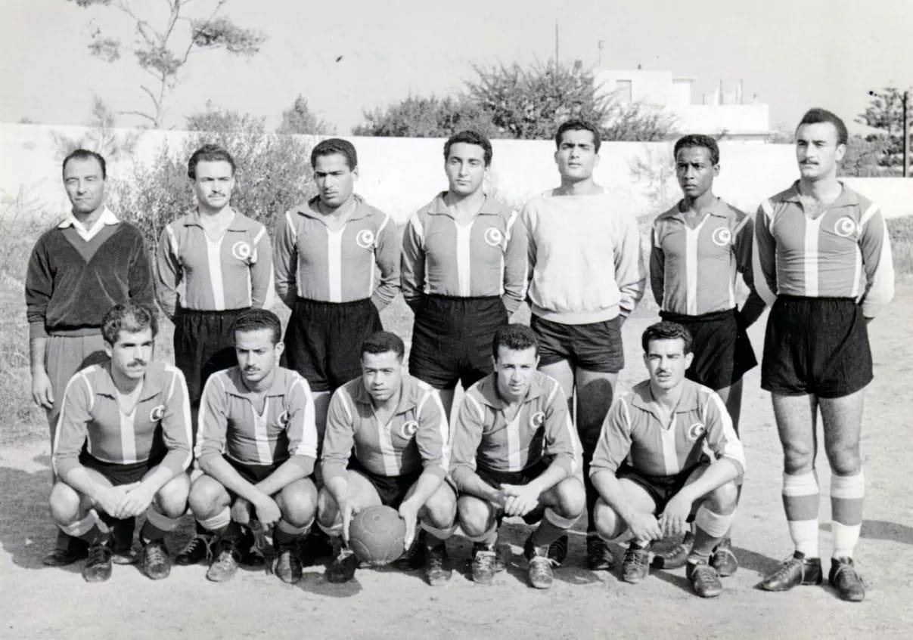
Espérance Sportive de Tunis - L'honneur de la nationDossier : Les origines · livre p. 96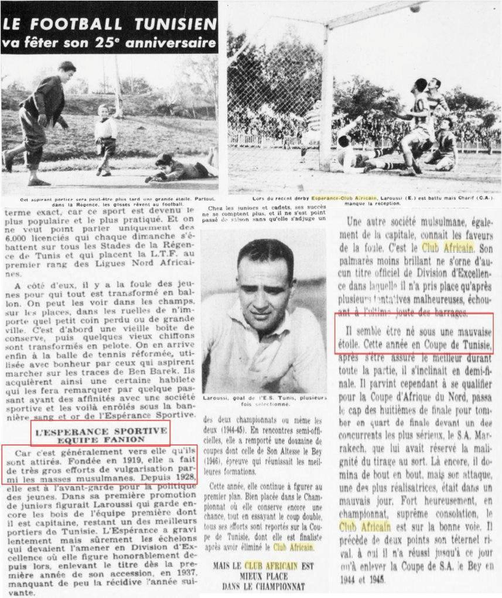
Omnisports : hebdomadaire illustré de critique sportive et technique - 15 Avril 1947Dossier : Les origines · livre p. 97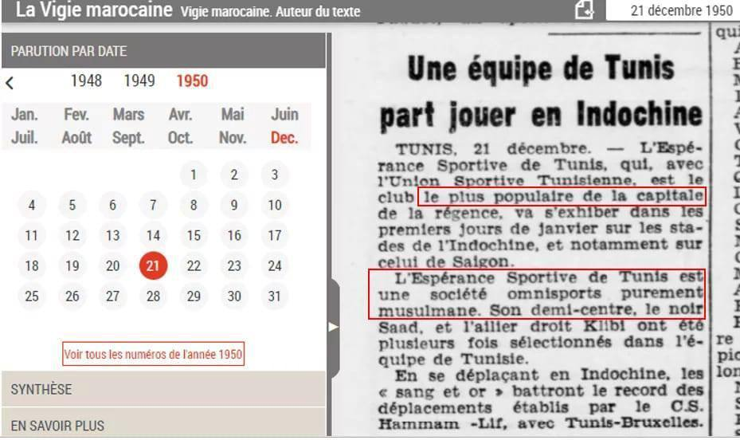
La vigie marocaine du 21 décembre 1950Dossier : Les origines · livre p. 98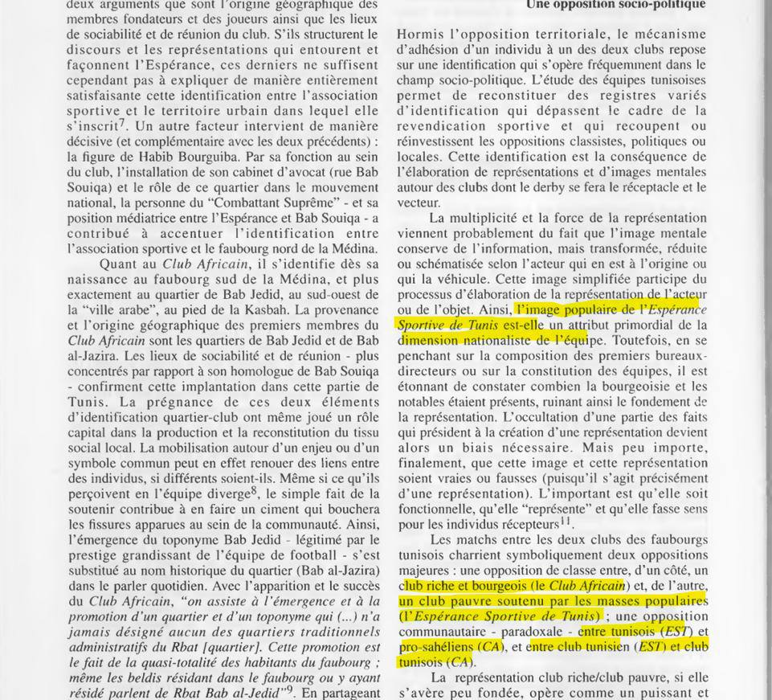
Maghreb Machrek - Figure 1Dossier : Les origines · livre p. 99- Maghreb Machrek - Figure 2Dossier : Les origines · livre p. 100
- Maghreb Machrek - Figure 3Dossier : Les origines · livre p. 101
- Les musulmans ont battu les italiensDossier : Les origines · livre p. 102
- Déplacement en AlgérieDossier : Les origines · livre p. 103
- Déplacement AlgérieDossier : Les origines · livre p. 104
- Coupe du monde des clubs 2025 à RadesDossier : Le livre · livre p. 209